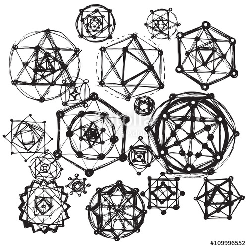
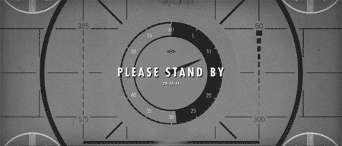
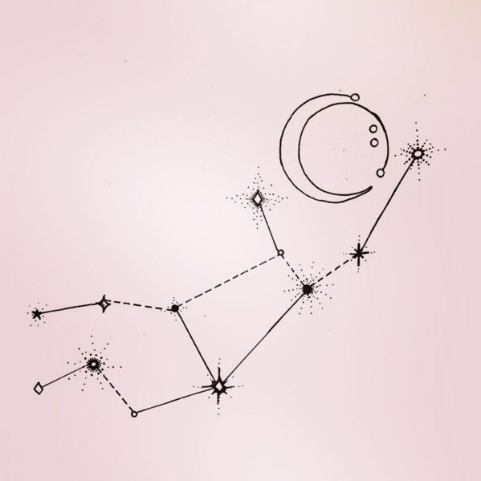

Музика
Като любител на музиката, оценявам всяка една качествена творба и разбира се има някои жанрове, които слушам повече от други, а именно:
- -Alternative rock.
- -Metal.
- -Soft rock.
- -Музиката на 80-те и 90-те.
Книги
Обожавам да чета криминалета. Харесвам също трилъри и книги оповаващи се на философията. Последната книга, която прочетох е "Директорът" от Дейвид Игнейшъс.
Сериали
Изгледала съм адски много сериали и може да се каже, че едни от любимите ми са: Grimm, TBBT, Stranger Things, Mr. Robot, Lucifer и Castle. Ако искате да прегледате и останалите анимета/сериали, които съм гледала/гледам/планирам да гледам, може да разгледате профила ми в TV Time.
Астрология
Дам, не вярвам в съществуването на Господ, но вярвам, че разположението на небесните тела е свързано със случващото се в човешкия свят, индивидуално и колективно. Относно мен, аз съм дева с асцендент рак и луна в близнаци.
